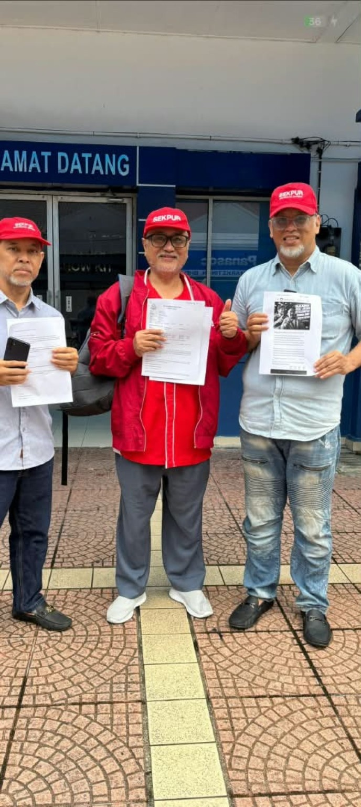

KEDAULATAN MALAYSIA BUKAN BAHAN TAWARAN: DAKWAAN “AS MAHU JATUHKAN KERAJAAN” WAJIB DISEMAK HINGGA KE AKAR
Atas prinsip itulah saya telah membuat laporan polis di Balai Polis Dang Wangi pada 5 September 2026, susulan laporan media mengenai satu dakwaan yang pada pandangan saya terlalu serius untuk dibiarkan menjadi sekadar polemik politik.
Laporan media tersebut memetik Presiden PAS, Tan Sri Abdul Hadi Awang, yang mendakwa bahawa ketika lawatan bekas Presiden Amerika Syarikat, Barack Obama, ke Malaysia pada 2014, beberapa pemimpin PAS telah dijemput ke Kedutaan Amerika Syarikat.
Lebih mengejutkan, menurut laporan Free Malaysia Today, beliau mendakwa pihak Amerika ketika itu sanggup membantu menjatuhkan kerajaan yang memerintah dan mengambil alih kerajaan.
Laporan itu turut menyebut Datuk Seri Takiyuddin Hassan dan Datuk Seri Dr Ahmad Samsuri Mokhtar sebagai antara wakil PAS yang menghadiri pertemuan tersebut.
Lebih jauh lagi, Tan Sri Abdul Hadi dilaporkan berkata bahawa beliau kemudiannya bertemu Duta Amerika Syarikat bersama Datuk Mustafa Ali dan ditanya siapakah yang dicadangkan PAS untuk menjadi Perdana Menteri sekiranya berlaku perubahan kerajaan.
Jika dakwaan ini benar, kita sedang berhadapan dengan persoalan yang jauh lebih besar daripada persaingan politik antara parti.
Kita sedang bercakap mengenai kedaulatan Malaysia.
PERTEMUAN ITU DIKATAKAN BERLAKU — SEKARANG APA YANG BERLAKU DI DALAMNYA?
Saya mengambil maklum bahawa Datuk Seri Takiyuddin Hassan dilaporkan mengesahkan bahawa pertemuan dengan wakil Kedutaan Amerika Syarikat memang berlaku.
Pada masa yang sama, beliau menegaskan bahawa wakil PAS tidak memberikan sebarang keputusan dan PAS tidak mengharapkan campur tangan asing dalam politik negara.
Pendirian tersebut jelas dan wajar direkodkan.
Namun begitu, terdapat perbezaan antara “pertemuan berlaku” dengan “apa yang dibincangkan dalam pertemuan itu.”
Di sinilah persoalan yang lebih besar bermula.
Jika benar pihak asing bertanya sama ada PAS merancang menjatuhkan kerajaan pada ketika itu, apakah konteks sebenar pertanyaan tersebut?
Jika benar terdapat tawaran bantuan, apakah yang dimaksudkan dengan bantuan itu?
Adakah ia sekadar percakapan?
Adakah ia satu cadangan?
Adakah ia satu pendekatan politik?
Atau adakah terdapat sesuatu yang lebih konkrit?
Hanya siasatan berdasarkan bukti boleh memberikan jawapannya.
JIKA BENAR, SIAPA YANG MEMBERI MANDAT?
Ini persoalan yang tidak boleh dielakkan.
Jika seorang wakil kuasa asing benar-benar menawarkan bantuan untuk menjatuhkan sebuah kerajaan Malaysia, maka rakyat berhak bertanya:
Siapa yang memberi mandat untuk membuat tawaran tersebut?
Atas kapasiti apakah tawaran itu dibuat?
Adakah ia pendirian rasmi kerajaan asing tersebut atau pandangan individu tertentu?
Adakah terdapat arahan atau komunikasi daripada pihak yang lebih tinggi?
Adakah terdapat pertemuan susulan?
Adakah wujud dokumen, surat, e-mel, mesej, minit pertemuan atau rekod diplomatik?
Dan apakah sebenarnya yang dimaksudkan dengan “membantu menjatuhkan kerajaan”?
Semua persoalan ini tidak boleh dijawab dengan retorik politik.
Ia memerlukan bukti.
JIKA TIDAK BENAR, ITU JUGA PERLU DIJELASKAN
Dalam masa yang sama, saya ingin berlaku adil kepada semua pihak.
Saya tidak membuat kesimpulan bahawa dakwaan tersebut benar. Saya juga tidak menuduh mana-mana individu yang dinamakan telah melakukan kesalahan.
Tetapi jika dakwaan tersebut tidak benar, maka perkara itu juga perlu dijelaskan secara tuntas.
Mengapa?
Kerana apabila seorang pemimpin politik kanan membuat dakwaan bahawa kuasa asing pernah menawarkan bantuan untuk menjatuhkan kerajaan Malaysia, perkara tersebut boleh memberi kesan terhadap persepsi rakyat terhadap institusi demokrasi, kerajaan dan kedaulatan negara.
Jika tidak benar — jelaskan.
Jika ada kesalahan — ambil tindakan mengikut undang-undang.
Jika tiada kesalahan — tutup persoalan dengan fakta.
SAYA MEMBUAT LAPORAN, BUKAN MENJATUHKAN SESIAPA
Ada kemungkinan sesetengah pihak melihat tindakan membuat laporan polis ini sebagai langkah politik.
Saya menolak tafsiran sedemikian.
Saya membuat laporan kerana saya percaya kedaulatan negara adalah tanggungjawab setiap rakyat, tanpa mengira parti.
Saya tidak meminta PDRM mempercayai PAS. Saya tidak meminta PDRM mempercayai mana-mana pihak. Saya juga tidak meminta PDRM mengambil tindakan berdasarkan persepsi.
Saya meminta PDRM menyiasat berdasarkan fakta.
Itulah fungsi pihak berkuasa.
JANGAN SAMPAI CAMPUR TANGAN ASING MENJADI “NORMAL”
Malaysia mempunyai sejarah politik yang panjang. Kita mempunyai pilihan raya. Kita mempunyai Parlimen. Kita mempunyai Perlembagaan. Kita mempunyai proses sah untuk pertukaran kerajaan.
Perbezaan politik adalah perkara biasa dalam demokrasi.
Tetapi campur tangan asing dalam menentukan siapa yang memerintah Malaysia adalah perkara yang berbeza sama sekali.
Sebab itu kita perlu mengambil serius setiap dakwaan sedemikian.
Hari ini ia mungkin sekadar dakwaan yang berlaku pada 2014.
Tetapi persoalannya ialah:
Sudah tentu tidak.
PDRM PERLU MENYIASAT DENGAN PROFESIONAL
Saya telah meminta agar pihak PDRM meneliti antara lain:
kesahihan pertemuan;
siapa yang hadir;
tujuan pertemuan;
apa yang sebenarnya dibincangkan;
dakwaan mengenai tawaran bantuan menjatuhkan kerajaan;
bentuk bantuan yang dikatakan ditawarkan;
kemungkinan kewujudan komunikasi atau dokumen berkaitan;
pihak-pihak lain yang mungkin mempunyai pengetahuan langsung; dan
sama ada terdapat sebarang kesalahan di bawah undang-undang Malaysia.
Saya menyerahkan sepenuhnya kepada pihak penyiasat untuk menentukan peruntukan undang-undang yang sesuai berdasarkan fakta dan bukti.
Ini penting kerana kita tidak mahu undang-undang digunakan sebagai senjata politik.
Undang-undang mesti menjadi alat mencari kebenaran.

MALAYSIA BUKAN PROKSI MANA-MANA KUASA ASING
Saya ingin menyatakan perkara ini dengan tegas.
Malaysia tidak seharusnya menjadi proksi kepada mana-mana kuasa asing.
Siapa pun yang menjadi kerajaan — UMNO, PAS, PKR, DAP, BN, PH atau mana-mana gabungan — kerajaan Malaysia tetap kerajaan Malaysia.
Dan mandat rakyat Malaysia tetap milik rakyat Malaysia.
Tidak ada kuasa asing yang mempunyai hak untuk menentukan siapa yang patut menjadi Perdana Menteri Malaysia.
Jika rakyat mahu perubahan, rakyat menentukan.
Jika Parlimen berubah, proses Perlembagaan menentukan.
Jika kerajaan bertukar, ia mesti berlaku melalui mekanisme demokrasi yang sah.
Bukan melalui campur tangan kuasa luar.
SEKARANG BIAR FAKTA BERBICARA
Saya telah membuat laporan polis dan menyerahkan perkara ini kepada pihak berkuasa.
Saya tidak akan menghukum sesiapa melalui media sosial.
Saya tidak akan membuat tuduhan melulu.
Saya tidak akan menjadi “hakim” kepada perkara yang belum disiasat.
Tetapi saya juga tidak akan berpura-pura bahawa dakwaan ini tidak penting.
Ia penting.
Kerana apabila dakwaan menyentuh usaha pihak asing untuk menjatuhkan kerajaan Malaysia, ia menyentuh maruah negara.
Maka rakyat berhak mendapat jawapan.
Bukan jawapan politik.
Jawapan berdasarkan bukti.
KESIMPULAN: KERAJAAN BOLEH BERTUKAR, KEDAULATAN TIDAK BOLEH DIJUAL
Pertukaran kerajaan adalah lumrah demokrasi.
Tetapi campur tangan asing bukan lumrah yang harus diterima.
Kita boleh berbeza parti. Kita boleh berbeza ideologi. Kita boleh berbeza pendapat.
Tetapi apabila menyentuh kedaulatan Malaysia, kita mesti berdiri atas prinsip yang sama.
Malaysia mesti ditentukan oleh rakyat Malaysia.
Jika dakwaan tersebut benar, rakyat perlu tahu kebenarannya dan pihak berkuasa perlu menentukan sama ada terdapat pelanggaran undang-undang.
Jika dakwaan tersebut tidak benar, rakyat juga perlu diberi penjelasan yang jelas.
Jangan biarkan isu sebesar ini mati sebagai cerita politik.
Saya telah menjalankan tanggungjawab saya sebagai rakyat dengan membuat laporan polis.
Kini biarlah fakta, bukti dan undang-undang menentukan segala-galanya.
Kerajaan boleh berubah.
Pemimpin boleh berubah.
Parti boleh berubah.
Tetapi kedaulatan Malaysia bukan barang dagangan dan bukan hak mana-mana kuasa asing untuk menentukan.